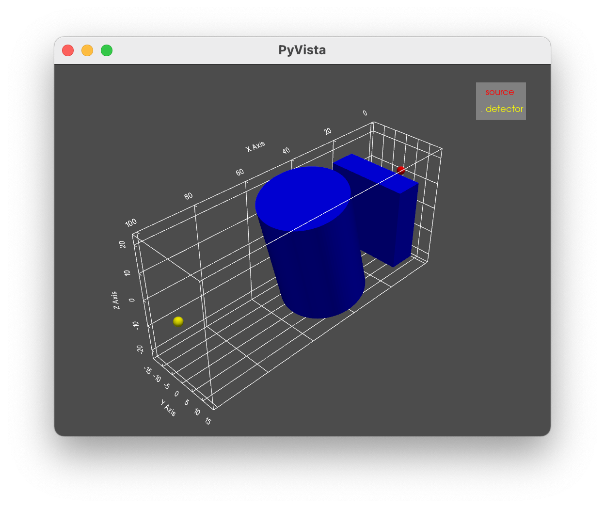
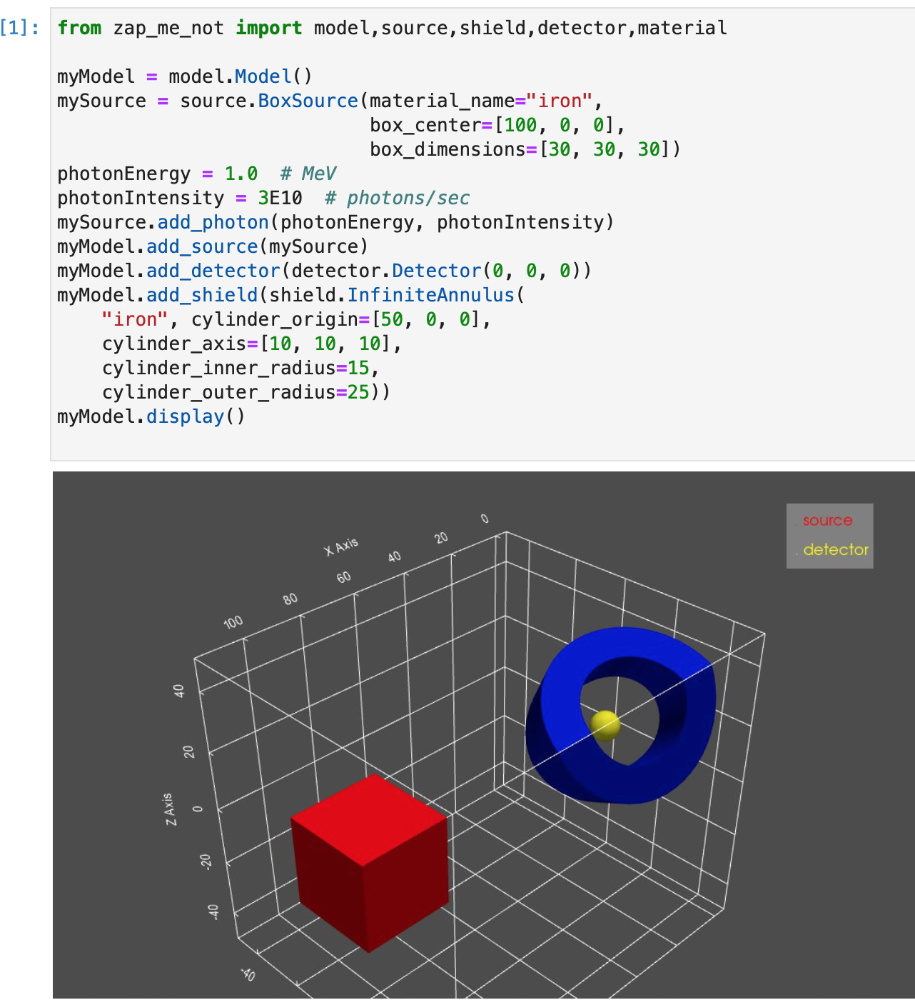

We Want Pictures!
Checking a model geometry can be challenging. To make the process a little easier the ZapMeNot library includes the ability to display an interactive view of the geometry, include source, shields, and detector. The Pyvista package is required to support graphics.
Once you have a model built and populated with a source, detector, and (optionally) shields, the following command can be used to display the model:
# display a model
myModel.display()
Provided you are using a an operating system with graphics capability (i.e. not just a console) ZapMeNot will display something similar to the following graphic. In this example the source is a point source shown in red, the detector is shown in yellow, and two shields are shown in blue.
The display can be rotated, moved, zoomed, and more by using a mouse or keyboard shortcuts.
It is possible to display the model on a headless linux server (one with no graphics card) by building your ZapMeNot model in a JupyterLab notebook. Pyvista documentation includes guidance on selecting a graphics backend for various server configurations.
Here’s a screenshot of a JupyterLab notebook. Your display may look different, depending on your workstation configuration.
